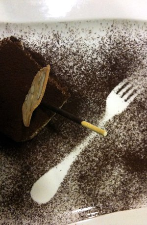
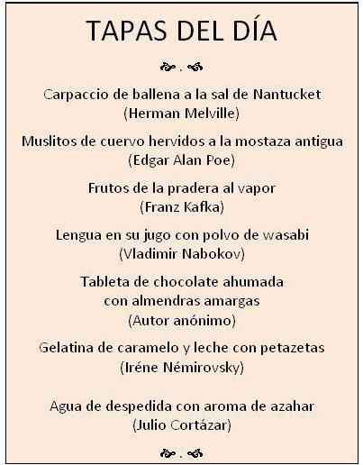

Gastronomía y Literatura: Salir de tapas (el cuento)
Resumen de la conferencia impartida en Alberta, Canadá.

TAPAS DEL DÍA
Carpaccio de ballena a la sal de Nantucket (Herman Melville)
Muslitos de cuervo hervidos a la mostaza antigua (Edgar A. Poe)
Frutos de la pradera al vapor (Franz Kafka)
Lengua en su jugo con polvo de wasabi (Vladimir Nabokov)
Tableta de chocolate ahumado con almendras amargas (Autor anónimo)
Gelatina de caramelo y leche con petazetas (Iréne Némirovsky)
Agua de despedida con aroma de azahar (Julio Cortázar)
Hace unos trescientos años, el escritor y abogado inglés James Boswell, a raíz de un viaje por las Hébridas, definió al ser humano como "un animal que cocina". El autor de la frase debía saber algo de aquello, pues pasó a la historia como un tipo disoluto, a quien le gustaba pasar semanas enteras en tabernas y lugares de peor reputación.
Una semanas antes de venir a Canadá, y cuando ya tenía el título de mi conferencia, estuve en Pamplona y en Málaga, disfrutando de los productos de animales que cocinan. En algunas ocasiones, sentado a la mesa. Otras veces, de tapas. A quienes no conozcan esta costumbre española habría que aclararles que "salir de tapas" consiste en ir de bar en bar, en paradas más o menos largas, degustando pequeños bocados gastronómicos. Por ejemplo, y copiando el menú de una famosa taberna de Pamplona, brotes de cogollo, yogur y huevas de trucha; canelón de boletus edulis y pichón; foie en salsa de uvas; anchoa con jamón, albahaca y piel de leche al yogur, o crujiente verde al roquefort. Generalmente, este recorrido de tapas suele hacerse en agradable compañía, con una buena conversación y el propósito no es ni comer ni beber en demasía, porque la clave está tanto en disfrutar de la charla como de los bocados.
El origen: cocinar hizo al hombre
Mucho antes de conocerse las propiedades de las tapas, del vino o de la cerveza, los antecesores de los humanos vivían en los árboles. Por supuesto, no cocinaban, y su dieta consistía en hojas, brotes, flores, semillas y, muy de vez en cuando, huevos, miel y algún que otro insecto o pájaro.
Hubo un momento en que esos prehumanos bajaron al suelo. Dicen los científicos que eso supuso una mejora del bipedismo, un desarrollo de las extremidades anteriores, la mejora de la visión frontal y, todo ello, un paulatino crecimiento del cerebro. El cerebro es un órgano caro en necesidades energéticas. Es de suponer que a medida que sus encéfalos se desarrollaban, los humanos tuvieran más apetito, y precisamente el suelo se convirtió en una magnífica despensa.
Es casi seguro que el inicio, o al menos el progreso de la codificación del lenguaje se produjo en esas excursiones, búsquedas y descubrimientos. Lo que antes habían sido gritos y sonidos para expresar miedo, dar una alarma, amedrentar a un adversario o seducir a una pareja, tuvo que convertirse necesariamente en un abanico de sonidos convenidos para nombrar y calificar. Poco a poco fueron compartiendo experiencias que podían ser enseñadas y aprendidas.
La domesticación del fuego supuso una revolución mayor de lo que en nuestra era fueron el uso de la electricidad o la invención de internet. La gastronomía nació cuando el hombre comenzó a meditar qué, cómo, cuándo y con quién iba a comer. Disponer de fuego permitía no comer improvisadamente y en cualquier lugar, sino hacerlo al abrigo de alguna cueva o algún tosco refugio, y eso obligaba a un lenguaje social para pactar con otros la recolección o la caza, la hora del almuerzo o las herramientas que se iban a utilizar para cocinar juntos aquellos alimentos.
Faustino Cordón, un farmacéutico español, destacado investigador de la biología evolutiva, coincidió con James Boswell al decir que cocinar hizo al hombre, ya que le obligó a planificar, a comunicarse con sus semejantes, le exigió elaborar un proyecto común de acción y, en definitiva, le hizo integrarse en el medio social. Los humanos se dieron cuenta de que mientras cocinaban o comían podían entretener el rato contando historias, y posiblemente alrededor de esas comidas surgieron las primeras leyendas.
De las ollas a las tapas literarias
Llegó un momento en el que el ser humano inventó la olla, un enorme recipiente que, puesto al fuego, era capaz de contener alimentos de lo más variado. La olla fue una revolución. Permitía guisar de una vez y en grandes cantidades, y dar de comer no solo a un pequeño grupo de personas, sino a toda una familia, e incluso a un clan.
Las primeras grandes obras literarias escritas se guisaron en enormes ollas en las que se mezclaban personas reales y personajes mitológicos. La primera obra escrita de la historia occidental, el Poema de Gilgamesh, es un cocido en el que hierven gigantes, dioses, semidioses, héroes, mitos, prostitutas, serpientes, infiernos, sueños y diluvios. La Biblia es otro ejemplo porque utiliza los restos de ollas anteriores para añadir normas higiénicas, leyes de pastores, delirios de profetas, fábulas morales, incestos, castigos divinos, ideología nacionalista e historias picantes. También lo son La Ilíada y La Odisea.
Con el tiempo, las primitivas y gigantescas ollas comunales dieron lugar a cazuelas más pequeñas y, sucesivamente, sartenes, planchas y cazos que crearon la gastronomía de autor. De la misma manera que cada región del mundo partía de sus productos naturales para elaborar una comida étnica, la cocina literaria fue especializándose y adaptándose a los paladares de los lectores. Surgieron así los primeros cocineros literarios con nombre: Esquilo, Sófocles y Eurípides en Grecia; Virgilio, Plauto u Ovidio en la Roma clásica; y acercándonos poco a poco a nuestro tiempo, Dante, Bocaccio, Chaucer, Shakespeare, Cervantes, Molière, Swift, Goethe, Voltaire, Melville, Tolstoi, Twain, Poe, Kafka… hasta llegar a nuestros días.
El problema del empacho literario
¿Qué fracción de toda la literatura cocinada a lo largo de la historia puede degustar un ser humano? ¿Qué platos son los más adecuados para lograr una buena dieta literaria? Al buen ritmo de un libro semanal, una persona puede leer entre los 6 y los 85 años poco más de cuatro mil libros. No parece demasiado si se piensa que hay millones de libros en el mundo.
La educación gastronómica de los niños empieza pronto. Cuando se considera que su metabolismo es adecuado y se estima que están preparados para ello, se les coloca encima de la mesa alguno de los platos elaborados por algún experto cocinero, esos platos que forman parte de algún canon literario, y se espera que esos jóvenes sean capaces de apreciar la calidad de sus ingredientes, los aromas y los sabores.
Pero, ay, suele ocurrir que en realidad sus estómagos no están tan preparados como parece para una carne algo viejuna, unas especias desconocidas y salsas demasiado espesas. El resultado es que algunos se la comerán después de masticar y remasticar, hasta conseguir tragar el bolo. Otros vomitarán durante y después de la comida. A algunos se les quitarán las ganas de seguir comiendo y otros aborrecerán esos platos que, a pesar de ser tan exquisitos (¡y lo son!) aún no pueden ser absorbidos por su intestino.
Cuando eso sucede varias veces, porque de algo hay que alimentarse, muchos de esos lectores acuden a los socorridos espaguetis, a las hamburguesas con bacon, al arroz con ketchup y a los bollos con azúcar refinado, a sabiendas de que todo ello es nutricionalmente inadecuado. "Por lo menos, el niño come algo", suspiran los padres.
El Quijote, La Ilíada, Moby Dick o Meridiano de sangre son joyas literarias, y cualquier profesor de literatura podría listar cien más. Sin duda es aconsejable leerlos porque contienen vitaminas, aminoácidos y lípidos esenciales. La cuestión es cómo, cuándo y dónde deben leerse.
La propuesta: Salir de tapas literarias
Quizá haya una solución que es salir de tapas. Algo que consiste en pasear por lugares emblemáticos de la ciudad literaria y dar a probar pequeños bocados de grandes manjares gastronómicos. Una salida de tapeo no supone hacer un número determinado de degustaciones, y puede estar comprendida entre una y no más de cinco o siete, dependiendo del tiempo.
Si queremos educar literariamente, debemos partir de que a todo buen cocinero le conviene conocer el más amplio espectro de sabores distintos. Salir de tapas nos permite ampliar experiencias, desarrollar el gusto personal y, además, nos invita a cocinar sencillos platos.
"Todo el mundo puede cocinar. No todo el mundo puede convertirse en un gran artista, pero un gran artista puede surgir en cualquier lugar."
— Ratatouille
Demos esa oportunidad.
Muchas gracias, buen apetito y mejor conversación.
